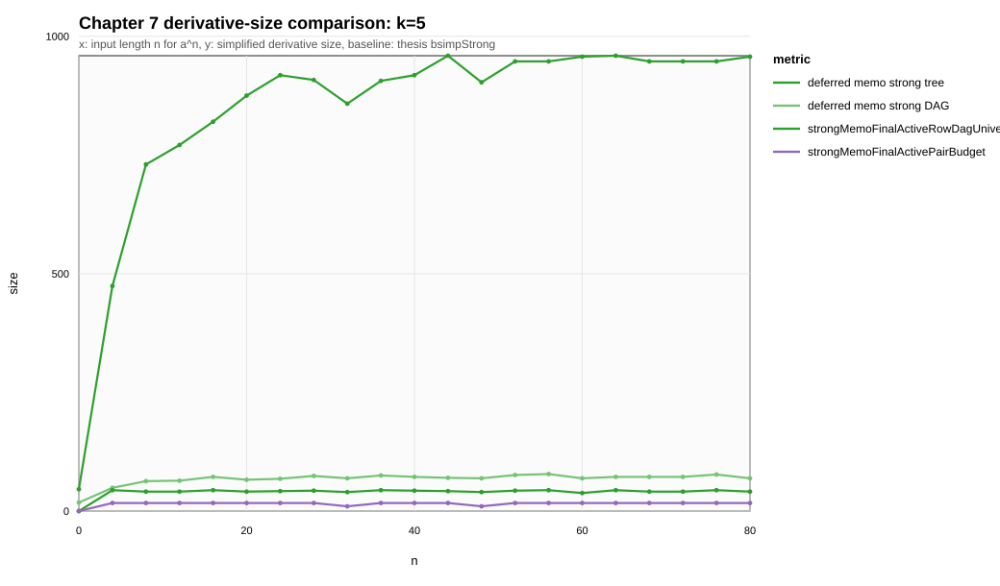
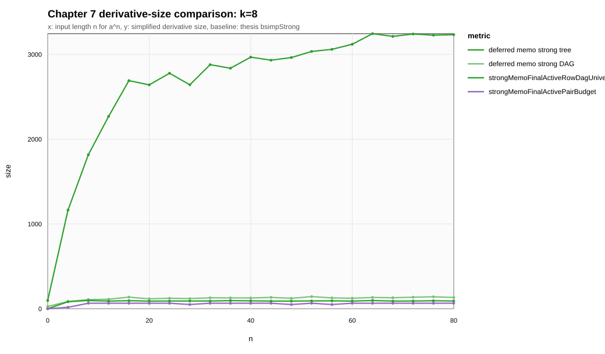

CSV source: ch7_size_grid.csv. Sequence mode: full. Baseline for ratios: strongTree.
| k | metric | n max | value | baseline | ratio at n max | max ratio | verdict |
|---|---|---|---|---|---|---|---|
| 5 | strongMemoTree | 80 | 957 | ||||
| 5 | strongMemoDag | 80 | 69 | ||||
| 5 | strongMemoFinalActiveRowDagUniverse | 80 | 41 | ||||
| 5 | strongMemoFinalActivePairBudget | 80 | 17 | ||||
| 8 | strongMemoTree | 80 | 3233 | ||||
| 8 | strongMemoDag | 80 | 133 | ||||
| 8 | strongMemoFinalActiveRowDagUniverse | 80 | 91 | ||||
| 8 | strongMemoFinalActivePairBudget | 80 | 65 |

